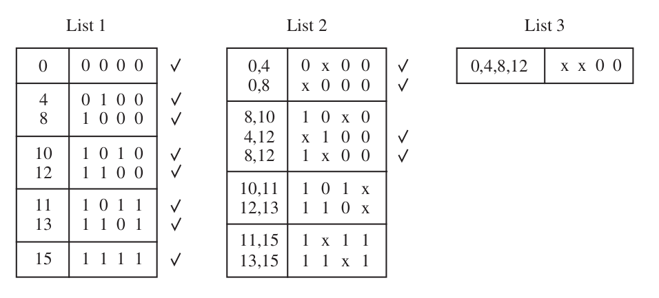
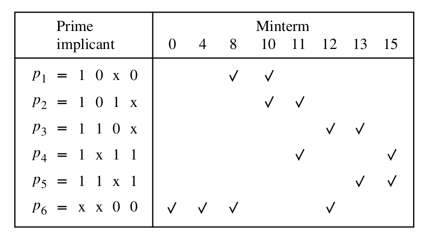
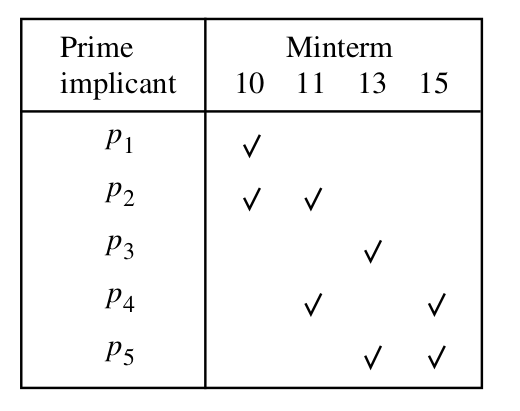
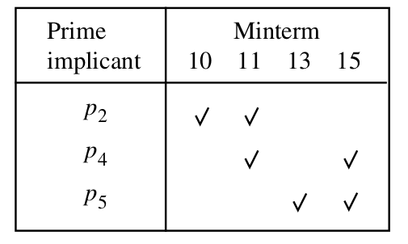
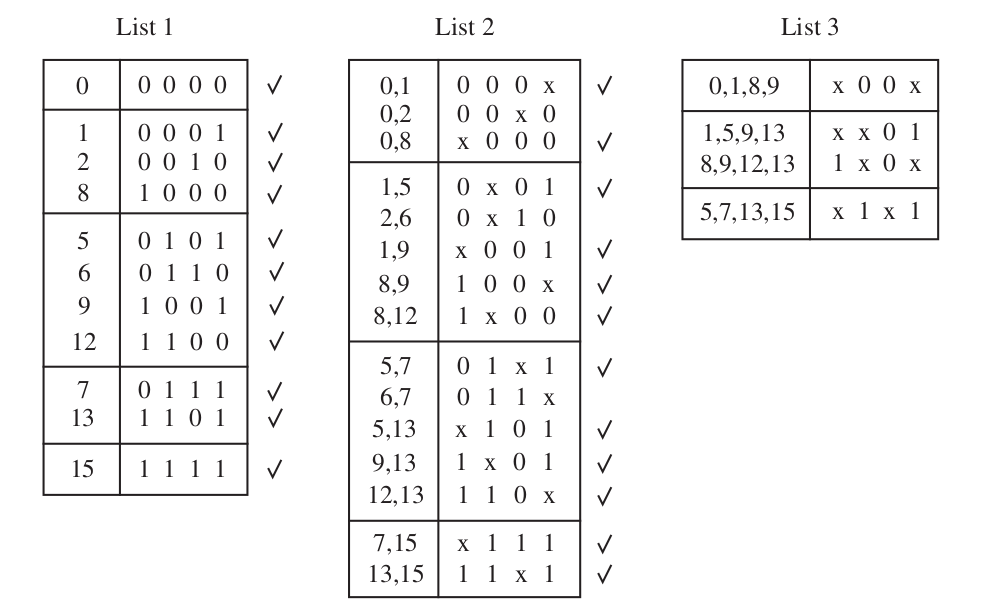

ECE 275: Quine McCluskey method
K-map 5-var example
\[ f (x_1 , \dots , x_5 ) = \sum m(1, 4, 6, 7, 9, 10, 12, 15, 17, 19, \\ 20, 23, 25, 26, 27, 28, 30, 31) + D(8, 16, 21, 22). \]Karnaugh Maps terminology
- Literal : a single variable or its complement.
-
Implicant: A product term that indicates for which \( f = 1 \)
All minterms are implicants. - Prime Implicant (PI): If an implicant cannot be "combined" into fewer literals.
- Essential Prime Implicant (EPI): A PI that is the only PI to cover some 1 on the K-map.
- Cover : PI's that account for all \( f = 1 \).
- Cost : Number of gates and inputs excluding input complements.
Example: \( f = \sum m(0, 1, 2, 3, 7) = \bx_1 + x_1 x_2 x_3\)
| \(\bar{x_1}\) | \(x_1 \) | |||
|---|---|---|---|---|
| \(\bar{x_2}\) | \(x_2 \) | \(\bar{y}\) | ||
| \(\bar{x_3}\) | 1 | 1 | 0 | 0 |
| \(x_3\) | 1 | 1+1 | 1 | 0 |
- Literals are \( \bx_1, x_1, x_2, x_3\)
- Implicants are \( \bx_1 \), \(\bx_1 x_2 x_3, \dots \), \( x_1 x_2 x_3\)
- PI's are \( \bx_1 \) and \( x_2 x_3 \)
- EPI's are \( \bx_1 \) and \( x_2 x_3 \)
- Cost is 9 = 6 inputs + 2 AND gate + 1 OR gate
Quine McCluskey method
\[ f (x 1 , \dots , x 4 ) = \sum m(0, 4, 8, 10, 11, 12, 13, 15) \]Finding PIs
 \[ P = \{ 11*0, 101*, 110*, 1*11, 11*1, **00 \} \]Minimum Cover
\[ P = \{ 11*0, 101*, 110*, 1*11, 11*1, **00 \} \]    \[ f = x_1 \bx_2 x_3 + x_1 x_2 x_4 + \bx_3 \bx_4 \]Quine McCluskey method
\[ f (x 1 , \dots , x 4 ) = \sum m(0, 2, 5, 6, 7, 8, 9, 13) + D(1, 12, 15) \]Finding PIs
 \[ P = \{ 00*0, 0*10, 011*, *00*, **01, 1*0*, *1*1\} \]Minimum Cover
\[ P = \{ 00*0, 0*10, 011*, *00*, **01, 1*0*, *1*1\} \]


 \[ f = \bx_1 x_3 \bx_4 + \bx_2 \bx_3 + x_2 x_4\]
\[ f = \bx_1 x_3 \bx_4 + \bx_2 \bx_3 + x_2 x_4\]
Thanks, Questions, Feedback?
https://vikasdhiman.info/ECE275-Sequential-Logic/